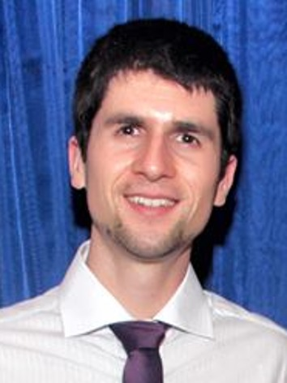

Miguel Cardoso Neves
I am a post-doctoral researcher at the Faculty of Computer Science of Dalhousie University, working with Prof. Israat Haque. Previously, I was a Research Associate at PUCRS (2020-2021) and a Part-time Professor at INF/UFRGS (2019-2020), all in Brazil. I hold a PhD degree in Computer Science from UFRGS under the supervision of Prof. Marinho Barcellos. During my PhD, I also spent one year as a research scholar at UC San Diego working with Prof. Kirill Levchenko. I got a B.Eng. degree in Computer Engineering in 2014 from UFRGS.News
| Apr 2022 | P4Mite accepted to NETWORKING'22 |
| Feb 2022 | Flavor accepted to CLOSER'22 |
| Jan 2022 | Awarded an Intel hardware grant for our work on fingerprinting IoT devices on commodity switches. Thanks Intel! |
| Dec 2021 | PoirIoT accepted to NOMS'22 |
| Sep 2021 | NetPixel accepted to ICPADS'21 |
| Sep 2021 | Our work on characterizing network performance of large-scale container deployments accepted to CloudNet'21 |
| Jul 2021 | Glad to receive the Reviewer Performance Award from NetSoft'21 |
Research interests
- Software defined networking
- Network function virtualization
- Network verification
- Network security
- Software security
- Program analysis
Research projects
- P4Sec: Securing Networks in the Programmable Data Plane Era. Funded by NSF and CTIC (2017–2020).
- Phoenix: em direção a uma arquitetura SDN sobrevivente. Funded by CNPq (2014–2017).
- Towards Better Networking Design and Maintenance. Funded by Microsoft Azure (2014–2017).
- SecFuNet: Security for the Future Networks using trusted components, funded by FP7 and CNPq (2011–2014).
- AltoStratus: Soluções de middleware para composição, execução e gerenciamento de serviços em nuvens híbridas e heterogêneas. Funded by CTIC (2011–2013).